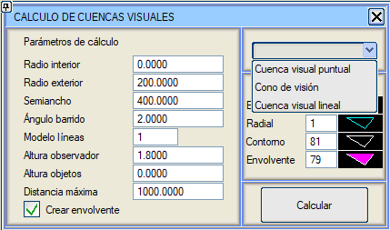
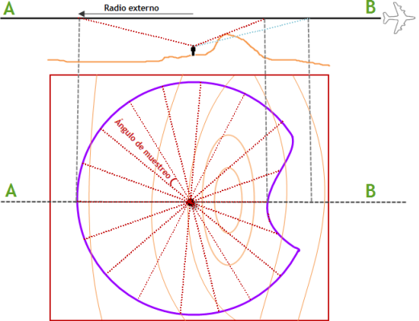

| |
|
GÖRSEL ETKİ ALANI ANALİZİ. GÖRÜŞ KONİSİ
|
Araçlar → Görsel Etki Alanı menüsünden erişilebilen bu seçenek, belirli bir kotta bulunan bir noktadan (örneğin bir elektrik direği, kontrol veya gözetleme kulesi vb.) bir yüzeyin görülebilen alanlarının sınırlarını elde etmeye olanak tanır. İletişim kutusu üç farklı analiz yapmaya olanak tanır: noktasal görsel etki alanı, görüş konisi ve hatsal görsel etki alanı. Bu analizde kullanılan çizgiler için tipler (Dış Sınır, Işınsal, Kontur ve Zarf) tanımlanabilir. Noktasal görsel etki alanı için, kontur çizgisi için dolgulu bir çizgi tipi kullanılması durumunda kapalı alanların içindeki adacıklar da dahil edilir. Analizi gerçekleştirmek için kullanılacak olan mevcut yüzey, mümkün olan en iyi şekilde tanımlanmış olmalıdır. Sadece bu şekilde hesaplama ve gösterim hatalarından kaçınılabilir. Yüzey (mevcut) ve gözlem noktası ([Hesapla] butonuna basıldıktan sonra kullanıcıdan istenir) dışında, aşağıdaki verilere de ihtiyaç duyulur:
Bir hatsal görsel etki alanı hesaplaması için, her bir köşe noktasında ve eğer köşeler tanımlanan maksimum mesafeden daha uzaktaysa ara noktalarda görsel etki alanı hesaplanır. Ayrıca her bir noktanın görsel etki alanının dış zarfı da oluşturulur. Görüş konisi, yine mevcut yüzeyle çalışır ve arazide belirli bir yüksekliğe sahip nesneleri ( görselleştirme yüksekliği olarak adlandırılır) dikkate almaya olanak tanır, yani x metre yüksekliğindeki nesnelerin görülebildiği alanı hesaplamayı sağlar: 
|